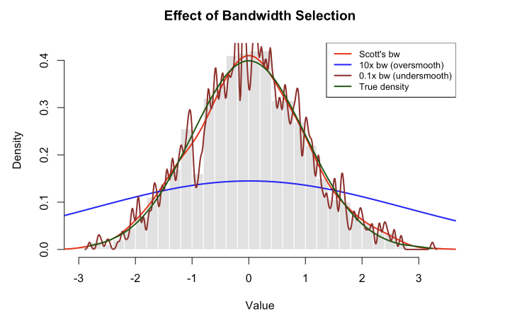
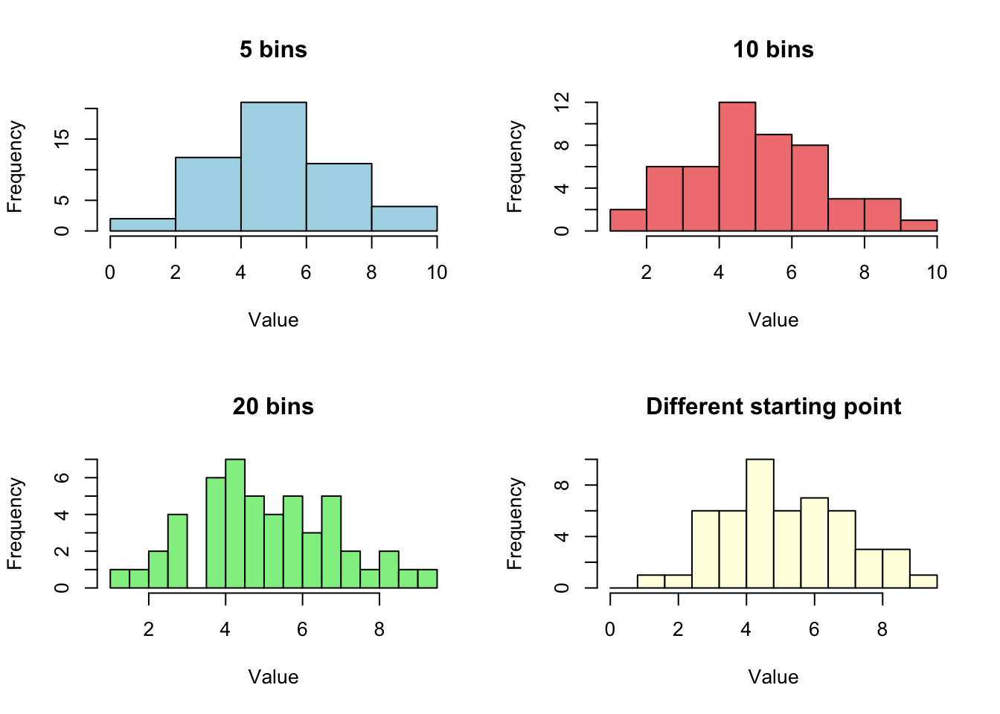
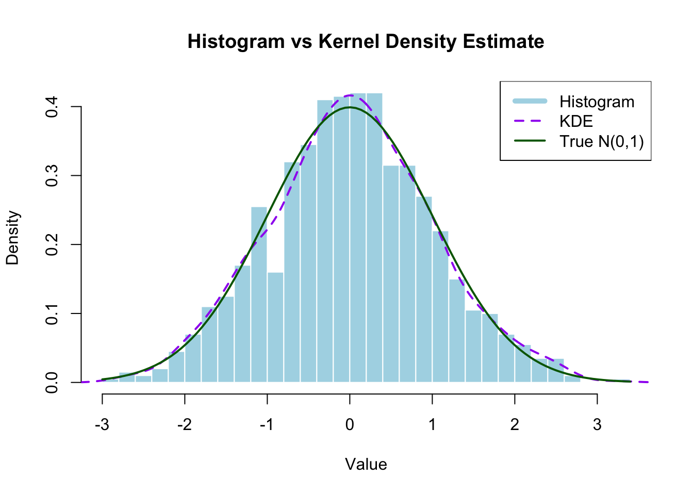
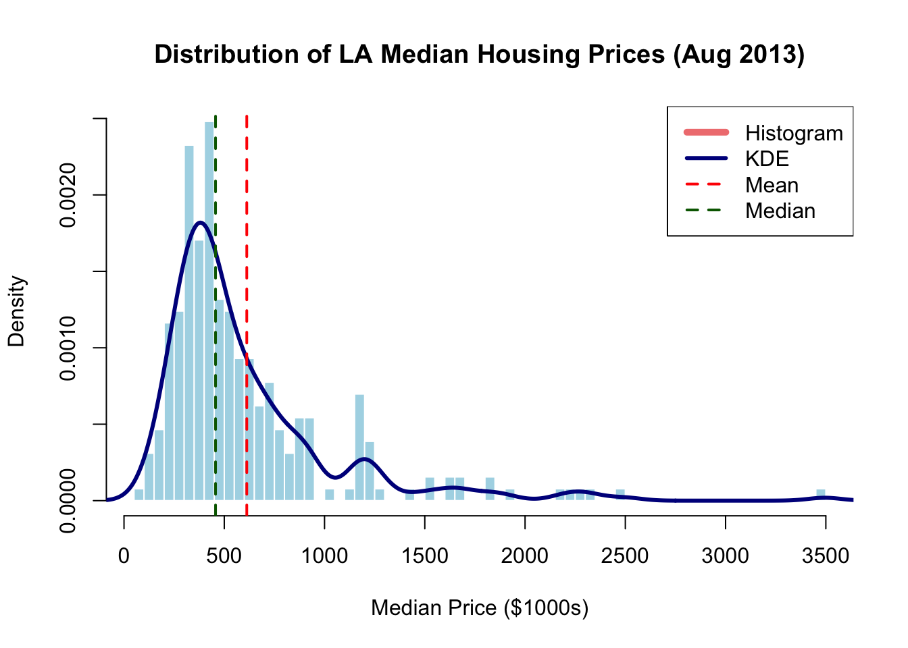
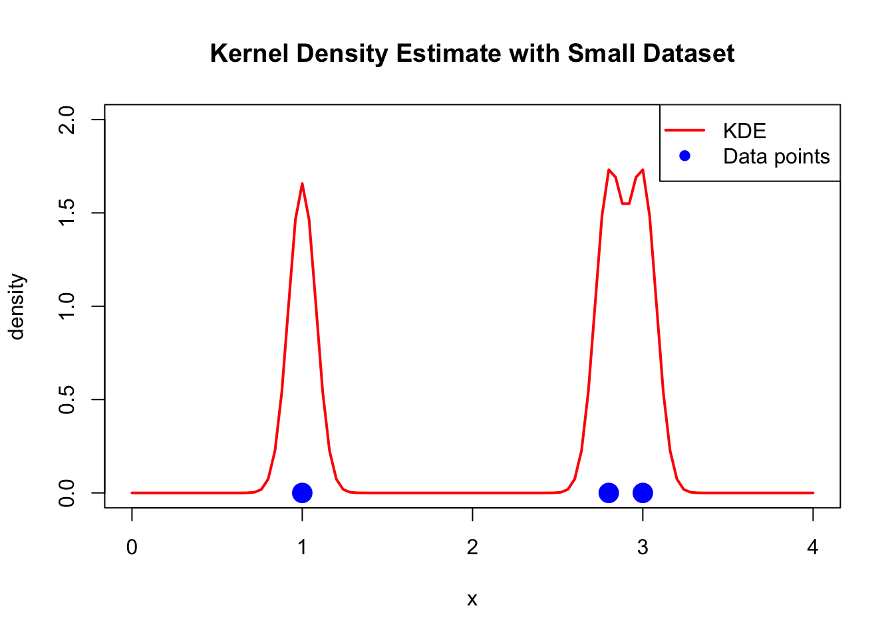
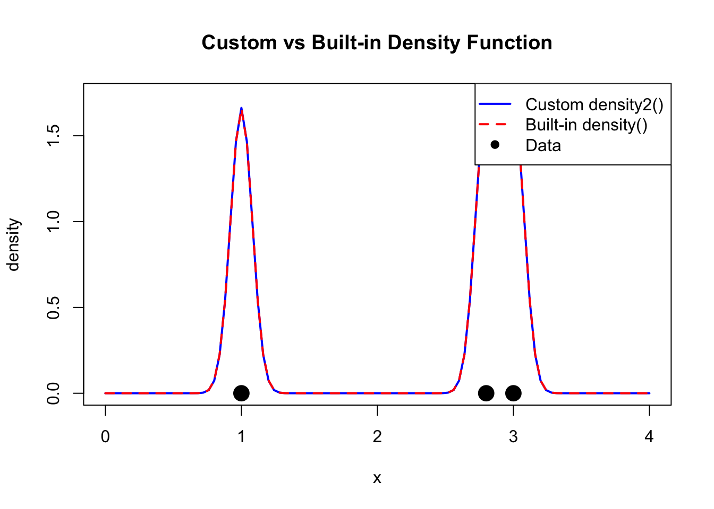

Introduction to Kernel Density Estimation and Rejection Sampling
R
Kernel Density
Author
Shuhan (Alice) Ai
Published
October 13, 2025
This tutorial introduces kernel density estimation and rejection sampling using Los Angeles housing price data. These methods are fundamental for exploratory data analysis and simulation studies.

1. What is Kernel Density Estimation? Why we need it?
Ever looked at a histogram and thought, “This looks too blocky and choppy to represent the real data”? You’re onto something! Histograms are great for a quick look, but they come with baggage: change the bin width or starting position slightly, and suddenly your distribution looks completely different. For sparse data, you might see misleading gaps that aren’t really there.
Kernel Density Estimation (KDE) solves these problems by creating smooth, flowing curves that better represent your data’s underlying distribution. Think of it as replacing each data point with a smooth “bump” (a kernel), then adding up all these bumps to get a continuous density curve. No arbitrary bins, no blocky artifacts—just a natural-looking estimate of where your data likes to hang out.
1.1 The Histogram Problem
Let’s see what we’re dealing with. Here’s why histograms can mislead us:
rm(list =ls())set.seed(123)#generates 50 random numbers from a normal distributionx_demo <-rnorm(50, mean =5, sd =2) par(mfrow=c(2,2)) #plots in a 2×2 grid#creates a histogram of x_demo using xx bins (breaks = ).hist(x_demo, breaks=5, main="5 bins", col="lightblue", xlab="Value")hist(x_demo, breaks=10, main="10 bins", col="lightcoral", xlab="Value")hist(x_demo, breaks=20, main="20 bins", col="lightgreen", xlab="Value")hist(x_demo, breaks=seq(0, 10, by=0.8), main="Different starting point", col="lightyellow", xlab="Value")

par(mfrow=c(1,1)) #layout back to the default (1 plot per window)
Note
Same data, four different stories! The histogram’s appearance depends heavily on:
Bin width: Too wide hides features; too narrow creates noise
Bin placement: Shift the bins slightly, get different peaks
Small samples: Gaps appear that might not be meaningful
This is where KDE comes to the rescue.
1.2 How Kernel Density Estimation Works
Here’s the key idea: instead of forcing data into rigid bins, we place a smooth “kernel” (think of it as a little hill or bump) on top of each data point. Then we add up all these bumps to create our density estimate.
Don’t let the math scare you! Here’s what each piece means:
Symbol
What it means
Think of it as…
\(\hat{f}(x_0)\)
Estimated density at point \(x_0\)
“How crowded is it here?”
\(n\)
Number of data points
Sample size
\(h\)
Bandwidth
“How wide should each bump be?”
\(K(\cdot)\)
Kernel function
The shape of each bump (usually a bell curve)
\(x_i\)
Individual data points
Where your actual observations are
Tip
Visual intuition: Imagine each data point emits a “glow” that fades as you move away from it. The kernel density estimate is the combined glow from all points. Areas with many nearby points glow brighter (higher density); sparse areas are dimmer (lower density).
1.3 The Bandwidth: Your Smoothness Dial
The bandwidth \(h\) is the most important choice you’ll make in KDE. It controls how smooth or wiggly your density estimate looks:
Small bandwidth (\(h\) ↓): Narrow bumps
Pro: Captures fine details
Con: Too wiggly, might show fake peaks (undersmoothing)
Large bandwidth (\(h\) ↑): Wide bumps
Pro: Smooth, stable estimate
Con: Might miss real features (oversmoothing)
Bandwidth selection rules (automatic methods):
Research has shown that choosing the right bandwidth is more important than choosing the kernel function. Two popular rules:
\(IQR\) = interquartile range (75th percentile - 25th percentile)
\(n\) = sample size
Scott’s rule tends to be slightly more robust, so we’ll use it as our default. The good news? R’s bw.nrd() function calculates this for you automatically!
Note
R’s Bandwidth Selection Functions
R’s density() function has built-in bandwidth selectors:
Default kernel: kernel = "gaussian" (the standard normal distribution)
Default bandwidth: bw = "nrd0" (Silverman’s rule)
Why Scott over Silverman? Silverman’s bandwidth (0.9) is often too small, leading to undersmoothing. Scott’s slightly larger multiplier (1.06) tends to give better results in practice.
#example with 1000 observationsx <-rnorm(1000)#Silverman's rulebw.nrd0(x)
[1] 0.2185577
0.9*min(sd(x), IQR(x)/1.34) *1000^(-0.2)
[1] 0.2185577
#Scott's rule (recommended)bw.nrd(x)
[1] 0.2574124
1.06*min(sd(x), IQR(x)/1.34) *1000^(-0.2)
[1] 0.2574124
2. Basic Kernel Density Estimation in R
2.1 Simple Example: Simulated Data
Let’s start with simulated normal data to see how KDE works:
library(tidyverse)#simulate 1000 observations from a standard normal distributionset.seed(123)x <-rnorm(1000)#create histogram with density overlayhist(x, nclass=40, prob=TRUE, main="Histogram vs Kernel Density Estimate",xlab="Value", ylab="Density",col="lightblue", border="white")# Add kernel density estimate (default uses Scott's rule)lines(density(x), lty=2, col="purple", lwd=2)# Add true density for comparisoncurve(dnorm(x), add=TRUE, col="darkgreen", lwd=2, lty=1)legend("topright", c("Histogram", "KDE", "True N(0,1)"),lty=c(1,2,1), col=c("lightblue","purple","darkgreen"),lwd=c(5,2,2))

What this shows: The kernel density estimate (purple dashed line) provides a smoother approximation of the true underlying normal distribution (green line) compared to the blocky histogram (blue bars).
2.2 Effect of Bandwidth Selection
#compare different bandwidth choices#differnt from `break= ` is approximate, `nclass =` is the exact value of # of binshist(x, nclass=40, prob=TRUE,main="Effect of Bandwidth Selection",xlab="Value", ylab="Density",col="gray90", border="white")#calculate Scott's bandwidthb_scott <-bw.nrd(x)cat("Scott's bandwidth:", round(b_scott, 3), "\n")
Red line (Scott’s rule): Provides good balance, closely approximates the true density. This is our recommended starting point.
Blue line (10x bandwidth): Oversmoothed - obscures important features, looks too flat. We’ve smoothed away real variation.
Brown line (0.1x bandwidth): Undersmoothed - too wiggly, shows spurious peaks that aren’t really in the underlying distribution.
Dark green line (True density): Since we simulated this data from a standard normal distribution, we know the true underlying density is \(N(0,1)\). This line shows what we’re trying to estimate. Notice how Scott’s rule (red) tracks it quite closely!
The dark green line is our “ground truth” - it’s what the data actually came from. In real applications, we never know this true density (that’s why we need KDE!), but here it helps us see that Scott’s bandwidth choice does a good job of recovering the real pattern.
Tip
Practical advice: Use automatic bandwidth selectors like bw.nrd() (Scott’s rule) as a starting point. Scott’s rule is generally more reliable than Silverman’s rule (bw.nrd0()).
3. Application: LA Housing Price Distribution
Note
Dataset: Los Angeles Housing Prices (August 2013)
This dataset contains median home prices for single-family residences across Los Angeles County communities in August 2013. The data captures a snapshot of the LA housing market during the post-2008 recovery period.
Unit of analysis: Communities/neighborhoods in Los Angeles County
Key variable: PriceMedianSFR(1000) - Median price of single-family homes in thousands of dollars
Time period: August 2013
Geographic coverage: Diverse communities from Malibu beach homes to inland suburbs
Price range: From affordable entry-level markets to ultra-luxury Beverly Hills estates
Now let’s apply KDE to real data: Los Angeles housing prices from August 2013.
#load the housing datahousing <-read.table("/Users/aishuhan/Documents/GitHub/AliceAii.github.io/posts/kerneldensity2/LAhousingpricesaug2013.txt", header=TRUE)#extract median single-family home prices (in $1000s)prices <-as.numeric(housing$PriceMedianSFR.1000.)#remove missing valuesprices <- prices[!is.na(prices)]head(housing)
#create histogram with kernel density estimatehist(prices, nclass =50, prob=TRUE,main ="Distribution of LA Median Housing Prices (Aug 2013)",xlab ="Median Price ($1000s)",ylab ="Density",col ="lightblue",border ="white")#add kernel density estimatelines(density(prices), col="darkblue", lwd=3)#add vertical lines for mean and medianabline(v=mean(prices), col="red", lwd=2, lty=2)abline(v=median(prices), col="darkgreen", lwd=2, lty=2)legend("topright",c("Histogram", "KDE", "Mean", "Median"),lty=c(1,1,2,2),col=c("lightcoral","darkblue","red","darkgreen"),lwd=c(5,3,2,2))

What this reveals:
Right-skewed distribution: Long tail of expensive homes (Beverly Hills, Malibu, etc.)
Multiple modes: Suggests different market segments or community types
Mean > Median: Confirms right skew; mean is pulled up by expensive outliers
KDE advantages: Smooth curve reveals subtle features that histogram bins might obscure
4. Understanding the density() Function
4.1 How density() works
The density() function in R computes kernel density estimates. Let’s understand its key parameters:
#basic density estimationdens <-density(prices)#examine the output structurestr(dens)
List of 8
$ x : num [1:512] -152 -145 -137 -130 -122 ...
$ y : num [1:512] 3.80e-07 5.16e-07 6.94e-07 9.25e-07 1.22e-06 ...
$ bw : num 81.8
$ n : int 258
$ old.coords: logi FALSE
$ call : language density.default(x = prices)
$ data.name : chr "prices"
$ has.na : logi FALSE
- attr(*, "class")= chr "density"
Key components:
x: Grid points where density is evaluated (default: 512 points). Why 512? It’s a power of 2 (\(2^9 = 512\)), which makes the Fast Fourier Transform (FFT) algorithm used internally by density() more efficient.
y: Estimated density values at each grid point
bw: Bandwidth used
n: Original sample size
call: The function call
data.name: Name of the input data
4.2 Customizing density() Parameters
#customize the density estimationx_small <-c(1, 2.8, 3) # small example dataset#method 1: Using density() with parametersdens1 <-density(x_small, bw=0.08, n=101, from=0, to=4)plot(c(0,4), c(0,2), type="n", xlab="x", ylab="density",main="Kernel Density Estimate with Small Dataset")lines(dens1, col="red", lwd=2)points(x_small, rep(0, length(x_small)), pch=19, col="blue", cex=2)legend("topright", c("KDE", "Data points"), col=c("red","blue"), lwd=c(2,NA), pch=c(NA,19))

4.3 Building Your Own Density Estimator
The density() function uses sophisticated algorithms (FFT-based), but we can create a simpler version to understand the mathematics:
#custom density functiondensity2 <-function(data_points, xgrid, bandwidth) {# data_points: original data# xgrid: points where we evaluate the density# bandwidth: smoothing parameter n_grid <-length(xgrid) density_values <-numeric(n_grid)for(i in1:n_grid) {# for each grid point, sum the kernel contributions from all data points# dnorm(data_points - xgrid[i], sd=bandwidth) evaluates the kernel density_values[i] <-sum(dnorm(data_points - xgrid[i], sd=bandwidth)) /length(data_points) }return(density_values)}#test our custom functiongrid_points <-seq(0, 4, length=101)custom_dens <-density2(x_small, grid_points, 0.08)#compare with density()plot(grid_points, custom_dens, type="l", col="blue", lwd=2,xlab="x", ylab="density",main="Custom vs Built-in Density Function")lines(dens1, col="red", lwd=2, lty=2)points(x_small, rep(0, length(x_small)), pch=19, col="black", cex=2)legend("topright", c("Custom density2()", "Built-in density()", "Data"), col=c("blue","red","black"), lwd=c(2,2,NA), lty=c(1,2,NA), pch=c(NA,NA,19))

#check the differencemax_diff <-max(abs(dens1$y - custom_dens))cat("Maximum difference between methods:", round(max_diff, 6), "\n")
Maximum difference between methods: 0.00498
Why the difference? The built-in density() uses FFT (Fast Fourier Transform) for computational efficiency and applies edge corrections. Our simple version is more intuitive but less sophisticated.
Mathematical note: When we write dnorm(x - xi, sd=h), this equals \(\frac{1}{h}\phi(\frac{x-x_i}{h})\), where \(\phi\) is the standard normal density. This is exactly the kernel formula \(\frac{1}{h}K(\frac{x-x_i}{h})\).
5. Two-Dimensional Kernel Smoothing
5.1 Extending to Spatial Data
For spatial data (latitude/longitude, x-y coordinates), we extend kernel density estimation to 2D:
#install.packages("splancs")library(splancs)#simulate spatial data: 30 random points in unit squareset.seed(456)n_points <-30x_coord <-runif(n_points, 0, 1)y_coord <-runif(n_points, 0, 1)#calculate 2D bandwidth (combining x and y bandwidths)bdw <-sqrt(bw.nrd0(x_coord)^2+bw.nrd0(y_coord)^2)cat("2D bandwidth:", round(bdw, 4), "\n")
2D bandwidth: 0.1945
#create point pattern and boundarypoints_matrix <-as.points(x_coord, y_coord)boundary <-matrix(c(0,0, 1,0, 1,1, 0,1, 0,0), ncol=2, byrow=TRUE)#compute 2D kernel densitykde_2d <-kernel2d(points_matrix, boundary, bdw)
Contour lines: Connect points of equal density (like elevation contours on a map)
Red/blue points: Original data locations
Real-world use case: If these were crime locations, darker areas would indicate crime hotspots where police might increase patrols.
6. Understanding Sampling Methods
6.1 Why Do We Need Different Sampling Methods?
Imagine you’re a researcher who needs to run simulations. Maybe you’re testing a statistical method, generating synthetic data, or doing a Monte Carlo study. You need random numbers that follow specific probability distributions. But here’s the thing: not all distributions are created equal when it comes to generating random samples!
The challenge: Computers can only generate truly random uniform numbers (like rolling a fair die). Everything else requires tricks and transformations.
Let’s break down when to use each method:
Method 1: Built-in R Functions (The Easy Way)
When to use: You need samples from common, well-studied distributions.
How it works: R has pre-programmed functions that do all the heavy lifting for you.
Real-world example: You’re simulating student test scores. If you assume scores follow a normal distribution with mean=75 and sd=10, just use rnorm(n, mean=75, sd=10). Quick and reliable! Limitation: Only works for distributions that R knows about. What if you need something custom?
Method 2: Inverse Transform Sampling (The Mathematical Trick)
When to use: You have a distribution with a formula for its cumulative distribution function (CDF), and you can solve for its inverse.
The key insight: If you can write down \(F^{-1}(u)\) (the inverse CDF), you can transform uniform random numbers into samples from your target distribution.
How it works: 1. Generate \(u\) from Uniform(0,1) 2. Plug it into the inverse CDF: \(x = F^{-1}(u)\) 3. Now \(x\) follows your target distribution!
Real-world example: You’re modeling customer wait times. Wait times often follow an exponential distribution. The exponential CDF is \(F(x) = 1 - e^{-\lambda x}\), and its inverse is \(F^{-1}(u) = -\frac{\ln(1-u)}{\lambda}\). So:
#generate exponential wait times (lambda = 0.5 customers per minute)u <-runif(1000)wait_times <--log(1-u) /0.5
Limitation: You need to be able to write down and compute \(F^{-1}(u)\). For many distributions (like the normal distribution), this inverse doesn’t have a nice closed form!
Method 3: Rejection Sampling (The Clever Workaround)
When to use: You have a complex or custom distribution where: - No built-in R function exists - The inverse CDF is impossible or impractical to compute - You can evaluate the density \(f(x)\) but can’t directly sample from it
How it works: Generate candidates from an easy distribution, then “reject” the ones that don’t fit your target distribution well. (We’ll dive deep into this later!)
Real-world example: You created a kernel density estimate from your data and want to generate synthetic observations that match this pattern. There’s no built-in function for this, and there’s no inverse CDF formula. Rejection sampling to the rescue!
#The full code will be shown in Section 7)
Another example: Truncated distributions. Suppose you need normal random variables, but only between 0 and 10 (maybe modeling physical quantities that can’t be negative). Rejection sampling makes this easy: generate from the normal distribution and reject values outside [0,10].
Limitation: Can be slow if your proposal distribution doesn’t match the target well (low acceptance rate).
Method 4: MCMC (Markov Chain Monte Carlo) - Beyond This Tutorial
When to use: High-dimensional problems, especially in Bayesian statistics where you need to sample from complex posterior distributions.
How it works: Creates a chain of samples where each new sample depends on the previous one. Over time, this chain converges to your target distribution.
Real-world example: You’re doing Bayesian regression with 50 parameters. The posterior distribution is a 50-dimensional beast that no simple method can handle. MCMC methods like Metropolis-Hastings or Gibbs sampling are your only option.
Why we’re not covering it: MCMC deserves its own tutorial! For now, know that when rejection sampling becomes too inefficient or you’re working in high dimensions, MCMC methods take over.
Tip
Quick Decision Guide
Start here: Do you need a common distribution (normal, uniform, exponential, etc.)?
→ Use built-in R functions (rnorm, runif, rexp, etc.)
If not: Can you write down the inverse CDF \(F^{-1}(u)\)?
Yes → Use inverse transform sampling
No → Can you evaluate the density \(f(x)\)?
Yes → Use rejection sampling
No → You might need MCMC (advanced topic)
Summary table:
Situation
Method
Example
Why Use It
Common distributions
Built-in R functions
rnorm(), runif(), rexp()
Fast, reliable, no thinking required
Known inverse CDF
Inverse transform
Exponential, some custom distributions
Mathematically elegant, exact
Complex custom distributions
Rejection sampling
KDE, truncated distributions, non-standard shapes
Flexible, works when inverse CDF unavailable
High-dimensional problems
MCMC methods
Bayesian posterior distributions
Only practical option for complex posteriors
6.2 Simple Random Sampling
Definition: Each observation has an equal probability of being selected.
# Simple random sampling examplesset.seed(789)# Sample from integerssample_int <-sample(1:100, size=10, replace=FALSE)cat("Random integers:", sample_int, "\n\n")
The empirical acceptance rate closely matches the theoretical rate of 0.5
The histogram of accepted samples closely matches the true triangular density
This confirms the rejection sampling algorithm works correctly
7.4 Example 2: Sampling from Kernel Density Estimates
A powerful application: generate synthetic data from a kernel density estimate!
Why this matters:
Bootstrap and resampling methods
Generating synthetic datasets that match empirical distributions
Missing data imputation
Simulation studies based on real data patterns
#create kernel density estimate from small datasetoriginal_data <-c(1, 2.8, 3)bw <-bw.nrd(original_data)cat("Original data:", original_data, "\n")
Original data: 1 2.8 3
cat("Bandwidth:", round(bw, 4), "\n\n")
Bandwidth: 0.635
#custom density function for evaluationkde_eval <-function(data, x0, bw) {sum(dnorm(data - x0, sd=bw)) /length(data)}#evaluate KDE on a grid for visualizationgrid_x <-seq(-2, 6, length=200)kde_values <-sapply(grid_x, function(x) kde_eval(original_data, x, bw))#find parameters for rejection samplingmax_kde <-max(kde_values)support_lower <--2support_upper <-6support_width <- support_upper - support_lowercat("Maximum KDE value:", round(max_kde, 4), "\n")